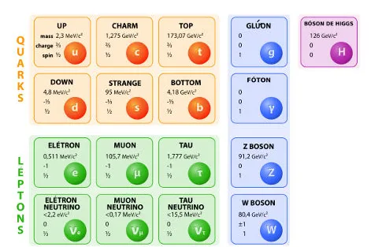

Artigos Científicos em Física
Aqui você encontra uma seleção de artigos científicos que exploram diversos aspectos da Física:

Teoria da Relatividade Geral: Uma Revisão Completa
Exploração detalhada da teoria de Albert Einstein sobre a gravidade e o espaço-tempo.

Mecânica Quântica e o Paradoxo de EPR
Um estudo profundo sobre o entrelaçamento quântico e as implicações filosóficas da mecânica quântica.

Buracos Negros e Radiação de Hawking
Uma análise da teoria proposta por Stephen Hawking sobre a radiação emitida por buracos negros.

O Modelo Padrão da Física de Partículas
Uma introdução ao modelo que descreve as partículas fundamentais e suas interações.

Física das Supercordas: O Caminho para a Teoria de Tudo
Exploração das supercordas e sua busca por uma unificação das forças fundamentais da natureza.
 A Física por Trás da Energia Escura
A Física por Trás da Energia Escura
Estudo sobre o papel da energia escura no modelo cosmológico atual e sua influência na aceleração do universo.